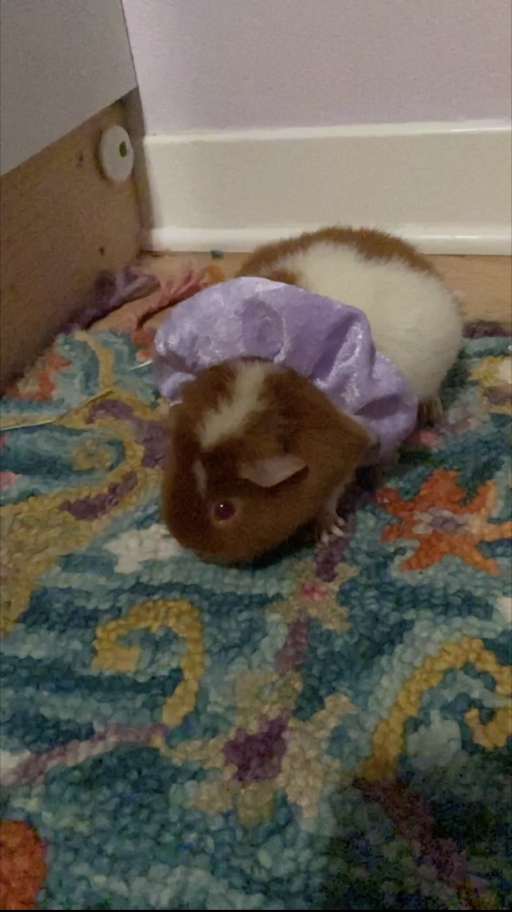
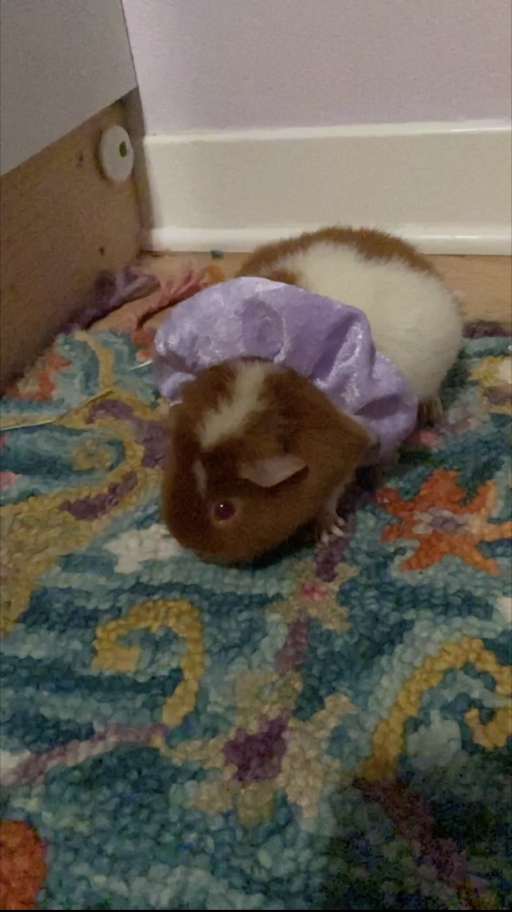
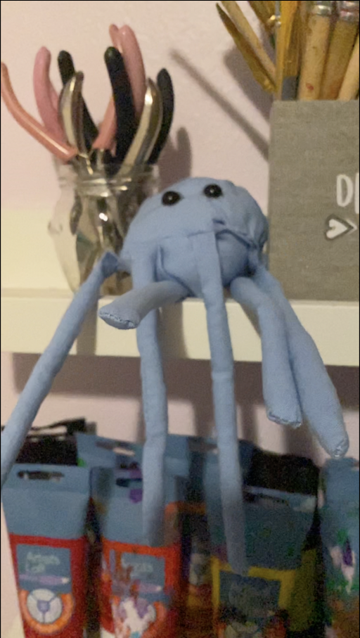

Our scrunchies are practical, cute, and nifty. These small hair-holder, or wrist decorations are also very practical. As well as holding your hair or looking fabulous on your wrist, they feature a little pocket to hold your small valuables while exercising, relaxing, and even doing nothing! Small valuables can include keys, hair ties, clips, and some other random things like lipstick. With a soft velvety, cute fabric, they can niftily hold your hair as well as your things. We have a selection of colors that include; light purple, royal blue + yellow so you can be in GMS school spirt.
Our jellyfish are enchantingly cute, and a fun way to make your home pop. It has little legs that are meant to wrap you with happiness, and cute eyes that make you want to squeeze the jellyfish really tight. Our jellyfish have a pinkish coral or blue options and are very fun to twirl around. They are super soft and cute. They are small enough to fit in your hand, so great way to add to the little places all around your house.